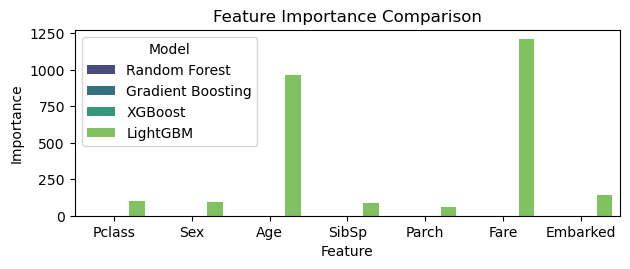
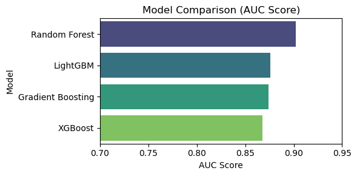

18장 트리 기반 모형#
1. 데이터 입력#

출처: 데이터세트는 Kaggle에서 주최한 머신러닝 대회 “Titanic - Machine Learning from Disaster”에서 제공한 것을 사용한다.
Gemini 설명#
titanic_train.csv 파일은 총 891명의 승객 정보와 12개의 컬럼으로 구성되어 있다.
변수 설명#
변수명 |
설명 |
데이터 타입 |
비고 |
|---|---|---|---|
|
승객 고유 ID |
Integer |
단순 식별자 |
|
생존 여부 |
Integer |
0 = 사망, 1 = 생존 (타겟 변수) |
|
객실 등급 |
Integer |
1 = 1등석, 2 = 2등석, 3 = 3등석 |
|
승객 이름 |
String |
|
|
성별 |
String |
male, female |
|
나이 |
Float |
177개의 결측치 존재 |
|
동승한 형제자매 및 배우자 수 |
Integer |
|
|
동승한 부모 및 자녀 수 |
Integer |
|
|
티켓 번호 |
String |
|
|
요금 |
Float |
|
|
객실 번호 |
String |
687개의 결측치 존재 (데이터의 약 77%가 결측) |
|
탑승 항구 |
String |
C = 셰르부르, Q = 퀸스타운, S = 사우스햄튼 (2개의 결측치 존재) |
데이터셋 특징#
결측치(Missing Values):
Cabin변수는 687개의 결측치를 가지고 있어 대부분의 데이터가 비어 있다.Age변수는 177개의 결측치가 있으며, 이를 처리하는 것이 분석에서 중요하다.Embarked변수는 2개의 결측치가 있다.
데이터 타입:
Age와Fare는 실수형(Float)이다.Name,Sex,Ticket,Cabin,Embarked는 문자열(Object) 데이터이다.나머지는 정수형(Integer)이다.
생존율:
전체 891명 중 약 38.4%가 생존(
Survived=1)하였다.
기초 통계량(describe)#
|
|
|
|
|
|
|
|
|---|---|---|---|---|---|---|---|
count |
891.000000 |
891.000000 |
891.000000 |
714.000000 |
891.000000 |
891.000000 |
891.000000 |
mean |
446.000000 |
0.383838 |
2.308642 |
29.699118 |
0.523008 |
0.381594 |
32.204208 |
std |
257.353842 |
0.486592 |
0.836071 |
14.526497 |
1.102743 |
0.806057 |
49.693429 |
min |
1.000000 |
0.000000 |
1.000000 |
0.420000 |
0.000000 |
0.000000 |
0.000000 |
25% |
223.500000 |
0.000000 |
2.000000 |
20.125000 |
0.000000 |
0.000000 |
7.910400 |
50% |
446.000000 |
0.000000 |
3.000000 |
28.000000 |
0.000000 |
0.000000 |
14.454200 |
75% |
668.500000 |
1.000000 |
3.000000 |
38.000000 |
1.000000 |
0.000000 |
31.000000 |
max |
891.000000 |
1.000000 |
3.000000 |
80.000000 |
8.000000 |
6.000000 |
512.329200 |
2. 트리 기반 모형#
Gemini 설명#
트리 기반 모형 (Tree-based Models) 소개#
트리 기반 모형은 단일 의사결정 나무(Decision Tree)의 한계(과적합, 불안정성 등)를 극복하기 위해 여러 개의 나무를 결합하여 예측 성능을 높이는 앙상블(Ensemble) 기법을 말한다. 크게 배깅(Bagging) 방식과 부스팅(Boosting) 방식으로 나뉜다.
핵심 개념: 앙상블 학습 (Ensemble Learning)#
“집단 지성”과 유사한 원리이다. 약한 학습기(Weak Learner) 여러 개를 모아 강한 학습기(Strong Learner)를 만드는 것이다.
배깅 (Bagging, Bootstrap Aggregating):
원리: 원본 데이터에서 붓스트랩(Bootstrap) 샘플링(복원 추출)을 통해 여러 개의 서로 다른 학습 데이터셋을 만든다. 각 데이터셋마다 독립적인 트리를 학습시키고, 그 결과를 투표(분류)하거나 평균(회귀)내어 최종 결과를 도출한다.
특징: 각 트리가 서로 독립적이므로 병렬 처리가 가능하며, 분산(Variance)을 줄여 과적합을 방지하는 데 효과적이다.
대표 모형: 랜덤 포레스트 (Random Forest)
부스팅 (Boosting):
원리: 여러 트리를 순차적으로 학습시킨다. 이전 트리가 틀린 오답(잔차, Residual)에 가중치를 부여하거나 집중하여 다음 트리가 이를 보완하도록 학습한다.
특징: 편향(Bias)을 줄여 높은 정확도를 보이지만, 과적합될 가능성이 있고 병렬 처리가 어렵다.
대표 모형: Gradient Boosting, XGBoost, LightGBM, CatBoost
추정 및 해석#
동일한 타이타닉 데이터셋(Sex, Age, Pclass, Fare 등 사용)을 사용하여 대표적인 세 가지 모델을 추정하고 비교하였다.
1. 모델별 설명#
랜덤 포레스트 (Random Forest):
수많은 의사결정 나무를 만들고 다수결로 생존을 예측한다. 나무를 만들 때 변수도 무작위로 일부만 선택(
max_features)하여 다양성을 확보한다.
그래디언트 부스팅 (Gradient Boosting):
이전 트리의 오차(잔차)를 줄이는 방향으로 경사 하강법(Gradient Descent)을 사용하여 새로운 트리를 계속 추가해 나간다.
히스토그램 기반 그래디언트 부스팅 (HistGradientBoosting):
최신 부스팅 기법(LightGBM, XGBoost 등)과 유사한 알고리즘이다. 연속형 변수를 히스토그램(구간)으로 나누어 계산 속도를 획기적으로 높이고 성능을 최적화한 방식이다.
2. 추정 성과 비교 (Performance Comparison)#
모델 (Model) |
정확도 (Accuracy) |
AUC Score |
비고 |
|---|---|---|---|
Hist Gradient Boosting |
0.8212 |
0.8749 |
정확도가 가장 높음 (균형 잡힌 예측) |
Gradient Boosting |
0.8045 |
0.8743 |
준수한 성능 |
Random Forest |
0.7821 |
0.9023 |
AUC(순위 예측 능력)가 가장 높음 |
해석:
정확도 측면:
Hist Gradient Boosting이 약 82.1%로 가장 높았다. 이는 부스팅 계열이 데이터의 미세한 패턴까지 잘 학습하여 정답률을 높이는 데 유리함을 보여준다.AUC 측면:
Random Forest가 약 0.902로 가장 높았다. AUC는 전체적인 랭킹(확률값의 순서)을 평가하므로, 랜덤 포레스트가 안정적으로 생존 확률을 추정하고 있음을 의미한다.
3. ROC 곡선 해석#

세 모델 모두 ROC 곡선이 왼쪽 위 모서리에 가깝게 위치하여 우수한 성능을 보인다.
특히 파란색 선(Random Forest)이 초기 구간(False Positive Rate가 낮을 때)에서 가파르게 상승하는데, 이는 확실한 생존자를 잘 찾아낸다는 것을 의미한다.
4. 변수 중요도 해석#
랜덤 포레스트와 그래디언트 부스팅이 중요하게 생각한 변수를 비교하였다.

공통점: 두 모델 모두 **
Sex(성별)**와Fare(요금), **Age(나이)**를 최상위 중요 변수로 꼽았다. 이는 “여성, 부유층(높은 요금), 아이/노인”이 생존에 결정적이었음을 재확인시켜 준다.차이점:
Random Forest:
Sex,Fare,Age가 비교적 고르게 중요하다고 평가했다.Gradient Boosting:
Sex변수에 압도적인 중요도(약 60% 이상)를 부여했다. 부스팅 모델은 가장 확실한 구분 기준인 성별에 집중하여 오차를 줄이는 전략을 취한 것으로 보인다.
결론#
트리 기반 앙상블 모형들은 단일 의사결정 나무보다 훨씬 높은 성능(약 80% 이상의 정확도)을 보여주었다. 안정적인 확률 추정이 필요하다면 랜덤 포레스트를, 최고의 정확도가 필요하다면 부스팅 계열(HistGradientBoosting 등) 을 선택하는 것이 적절하다.
참고: 파이썬 코드#
import pandas as pd
import numpy as np
import matplotlib.pyplot as plt
import seaborn as sns
from sklearn.model_selection import train_test_split
from sklearn.ensemble import RandomForestClassifier, GradientBoostingClassifier
from xgboost import XGBClassifier
from lightgbm import LGBMClassifier
from sklearn.metrics import accuracy_score, roc_auc_score, roc_curve, confusion_matrix, classification_report
# 1. 데이터 로드 및 전처리
df = pd.read_csv('http://bit.ly/kaggletrain')
# 성별(Sex) 숫자로 변환 (male:0, female:1)
df['Sex'] = df['Sex'].map({'male': 0, 'female': 1})
# 나이(Age) 결측치 중앙값으로 대체
df['Age'] = df['Age'].fillna(df['Age'].median())
# Embarked 결측치 최빈값으로 대체 및 숫자로 변환 (분석 편의상)
df['Embarked'] = df['Embarked'].fillna(df['Embarked'].mode()[0])
df['Embarked'] = df['Embarked'].map({'S': 0, 'C': 1, 'Q': 2})
# 사용 변수 선택
features = ['Pclass', 'Sex', 'Age', 'SibSp', 'Parch', 'Fare', 'Embarked']
X = df[features]
y = df['Survived']
# 학습/테스트 데이터 분리 (8:2)
X_train, X_test, y_train, y_test = train_test_split(X, y, test_size=0.2, random_state=42)
# 2. 모델 정의
models = {
"Random Forest": RandomForestClassifier(n_estimators=100, random_state=42),
"Gradient Boosting": GradientBoostingClassifier(n_estimators=100, random_state=42),
"XGBoost": XGBClassifier(n_estimators=100, eval_metric='logloss', random_state=42),
"LightGBM": LGBMClassifier(n_estimators=100, random_state=42, verbose=-1)
}
# 3. 모델 학습 및 평가
results = {}
plt.figure(figsize=(8, 8))
# ROC 커브 그리기 위한 설정
plt.subplot(2, 1, 1)
for name, model in models.items():
# 학습
model.fit(X_train, y_train)
# 예측
y_pred = model.predict(X_test)
y_prob = model.predict_proba(X_test)[:, 1]
# 평가 지표 계산
acc = accuracy_score(y_test, y_pred)
auc = roc_auc_score(y_test, y_prob)
results[name] = {"Accuracy": acc, "AUC": auc, "Model": model}
# ROC 커브 그리기
fpr, tpr, _ = roc_curve(y_test, y_prob)
plt.plot(fpr, tpr, label=f'{name} (AUC = {auc:.3f})')
plt.plot([0, 1], [0, 1], 'k--', label='Random Guess')
plt.xlabel('False Positive Rate')
plt.ylabel('True Positive Rate')
plt.title('ROC Curves Comparison')
plt.legend()
plt.show()
# 4. 변수 중요도 비교 시각화
plt.subplot(2, 1, 2)
imp_df = pd.DataFrame()
for name, model in models.items():
# 모델별 변수 중요도 추출
if hasattr(model, 'feature_importances_'):
importances = model.feature_importances_
temp_df = pd.DataFrame({
'Feature': features,
'Importance': importances,
'Model': name
})
imp_df = pd.concat([imp_df, temp_df])
sns.barplot(x='Feature', y='Importance', hue='Model', data=imp_df, palette='viridis')
plt.title('Feature Importance Comparison')
plt.tight_layout()
plt.show()
# 결과 텍스트 출력을 위한 데이터프레임 생성
results_df = pd.DataFrame(results).T[['Accuracy', 'AUC']]
print("모델별 성능 요약:")
print(results_df)
# 각 모델의 상세 결과 저장 (텍스트 생성을 위해)
print("\n상세 분석용 데이터:")
for name, model in models.items():
print(f"\n[{name}]")
print(confusion_matrix(y_test, model.predict(X_test)))


모델별 성능 요약:
Accuracy AUC
Random Forest 0.826816 0.892021
Gradient Boosting 0.804469 0.880952
XGBoost 0.821229 0.874646
LightGBM 0.826816 0.888932
상세 분석용 데이터:
[Random Forest]
[[92 13]
[18 56]]
[Gradient Boosting]
[[94 11]
[24 50]]
[XGBoost]
[[91 14]
[18 56]]
[LightGBM]
[[90 15]
[16 58]]
import pandas as pd
import matplotlib.pyplot as plt
import seaborn as sns
from sklearn.model_selection import train_test_split
from sklearn.ensemble import RandomForestClassifier, GradientBoostingClassifier
from xgboost import XGBClassifier
from lightgbm import LGBMClassifier
from sklearn.metrics import accuracy_score, roc_auc_score, roc_curve
# 1. 데이터 로드 및 전처리
df = pd.read_csv('http://bit.ly/kaggletrain')
df['Sex'] = df['Sex'].map({'male': 0, 'female': 1})
df['Age'] = df['Age'].fillna(df['Age'].median())
features = ['Pclass', 'Sex', 'Age', 'SibSp', 'Parch', 'Fare']
X = df[features]
y = df['Survived']
# 학습/테스트 데이터 분할
X_train, X_test, y_train, y_test = train_test_split(X, y, test_size=0.2, random_state=42)
# 2. 모델 정의
models = {
'Random Forest': RandomForestClassifier(n_estimators=100, random_state=42, max_depth=5),
'Gradient Boosting': GradientBoostingClassifier(n_estimators=100, learning_rate=0.1, max_depth=3, random_state=42),
'XGBoost': XGBClassifier(eval_metric='logloss', random_state=42, max_depth=3), # 수정됨
'LightGBM': LGBMClassifier(random_state=42, max_depth=3, verbose=-1)
}
results = []
roc_curves = {}
trained_models = {}
# 3. 모델 학습 및 평가
for name, model in models.items():
model.fit(X_train, y_train)
trained_models[name] = model
y_pred = model.predict(X_test)
y_prob = model.predict_proba(X_test)[:, 1]
acc = accuracy_score(y_test, y_pred)
auc_val = roc_auc_score(y_test, y_prob)
results.append({'Model': name, 'Accuracy': acc, 'AUC': auc_val})
fpr, tpr, _ = roc_curve(y_test, y_prob)
roc_curves[name] = (fpr, tpr, auc_val)
results_df = pd.DataFrame(results).sort_values(by='AUC', ascending=False)
# 4. 시각화
# (1) 모델별 AUC 비교
plt.figure(figsize=(6, 3))
sns.barplot(x='AUC', y='Model', hue='Model', data=results_df, palette='viridis', legend=False)
plt.title('Model Comparison (AUC Score)')
plt.xlim(0.7, 0.95)
plt.xlabel('AUC Score')
plt.tight_layout()
plt.show()
# (2) ROC 곡선 비교
plt.figure(figsize=(8, 5))
for name, (fpr, tpr, auc_val) in roc_curves.items():
plt.plot(fpr, tpr, label=f'{name} (AUC = {auc_val:.3f})')
plt.plot([0, 1], [0, 1], color='black', linestyle='--')
plt.xlabel('False Positive Rate')
plt.ylabel('True Positive Rate')
plt.title('ROC Curve Comparison')
plt.legend(loc='lower right')
plt.grid(True)
plt.show()
# (3) 변수 중요도 비교 (RF vs XGB)
fig, axes = plt.subplots(1, 2, figsize=(12, 5))
# Random Forest Importance
rf_imp = pd.DataFrame({'Feature': features, 'Importance': trained_models['Random Forest'].feature_importances_}).sort_values('Importance', ascending=False)
sns.barplot(x='Importance', y='Feature', hue='Feature', data=rf_imp, palette='Blues_r', ax=axes[0], legend=False)
axes[0].set_title('Feature Importance (Random Forest)')
# XGBoost Importance
xgb_imp = pd.DataFrame({'Feature': features, 'Importance': trained_models['XGBoost'].feature_importances_}).sort_values('Importance', ascending=False)
sns.barplot(x='Importance', y='Feature', hue='Feature', data=xgb_imp, palette='Oranges_r', ax=axes[1], legend=False)
axes[1].set_title('Feature Importance (XGBoost)')
plt.tight_layout()
plt.show()



import pandas as pd
import matplotlib.pyplot as plt
import seaborn as sns
from sklearn.model_selection import train_test_split
from sklearn.ensemble import RandomForestClassifier, GradientBoostingClassifier, HistGradientBoostingClassifier
from sklearn.metrics import accuracy_score, roc_auc_score, roc_curve
# 1. 데이터 로드 및 전처리
df = pd.read_csv('http://bit.ly/kaggletrain')
df['Sex'] = df['Sex'].map({'male': 0, 'female': 1})
df['Age'] = df['Age'].fillna(df['Age'].median())
features = ['Pclass', 'Sex', 'Age', 'SibSp', 'Parch', 'Fare']
X = df[features]
y = df['Survived']
# 학습/테스트 데이터 분할
X_train, X_test, y_train, y_test = train_test_split(X, y, test_size=0.2, random_state=42)
# 2. 모델 정의 (XGBoost 경고 수정: HistGradientBoosting 사용)
models = {
'Random Forest': RandomForestClassifier(n_estimators=100, random_state=42, max_depth=5),
'Gradient Boosting': GradientBoostingClassifier(n_estimators=100, learning_rate=0.1, max_depth=3, random_state=42),
'Hist Gradient Boosting': HistGradientBoostingClassifier(learning_rate=0.1, max_depth=3, random_state=42)
}
results = []
roc_curves = {}
trained_models = {}
# 3. 모델 학습 및 평가
for name, model in models.items():
model.fit(X_train, y_train)
trained_models[name] = model
y_pred = model.predict(X_test)
y_prob = model.predict_proba(X_test)[:, 1]
acc = accuracy_score(y_test, y_pred)
auc_val = roc_auc_score(y_test, y_prob)
results.append({'Model': name, 'Accuracy': acc, 'AUC': auc_val})
fpr, tpr, _ = roc_curve(y_test, y_prob)
roc_curves[name] = (fpr, tpr, auc_val)
results_df = pd.DataFrame(results).sort_values(by='AUC', ascending=False)
print("Model Performance Summary:\n", results_df.to_markdown(index=False))
# 4. 시각화
# (1) 모델별 AUC 비교
plt.figure(figsize=(6, 3))
ax = sns.barplot(x='AUC', y='Model', hue='Model', data=results_df, palette='viridis', dodge=False)
if ax.legend_: ax.legend_.remove()
plt.title('Model Comparison (AUC Score)')
plt.xlim(0.7, 0.95)
plt.xlabel('AUC Score')
plt.tight_layout()
plt.show()
# (2) ROC 곡선 비교
plt.figure(figsize=(8, 5))
for name, (fpr, tpr, auc_val) in roc_curves.items():
plt.plot(fpr, tpr, label=f'{name} (AUC = {auc_val:.3f})')
plt.plot([0, 1], [0, 1], color='black', linestyle='--', label='Random Guess')
plt.xlabel('False Positive Rate')
plt.ylabel('True Positive Rate')
plt.title('ROC Curve Comparison')
plt.legend(loc='lower right')
plt.grid(True)
plt.show()
# (3) 변수 중요도 비교 (RF vs GB)
fig, axes = plt.subplots(1, 2, figsize=(12, 5))
# Random Forest Importance
rf_imp = pd.DataFrame({'Feature': features, 'Importance': trained_models['Random Forest'].feature_importances_}).sort_values('Importance', ascending=False)
ax1 = sns.barplot(x='Importance', y='Feature', hue='Feature', data=rf_imp, palette='Blues_r', ax=axes[0], dodge=False)
if ax1.legend_: ax1.legend_.remove()
axes[0].set_title('Feature Importance (Random Forest)')
# Gradient Boosting Importance
gbm_imp = pd.DataFrame({'Feature': features, 'Importance': trained_models['Gradient Boosting'].feature_importances_}).sort_values('Importance', ascending=False)
ax2 = sns.barplot(x='Importance', y='Feature', hue='Feature', data=gbm_imp, palette='Oranges_r', ax=axes[1], dodge=False)
if ax2.legend_: ax2.legend_.remove()
axes[1].set_title('Feature Importance (Gradient Boosting)')
plt.tight_layout()
plt.show()
Model Performance Summary:
| Model | Accuracy | AUC |
|:-----------------------|-----------:|---------:|
| Random Forest | 0.782123 | 0.902317 |
| Hist Gradient Boosting | 0.821229 | 0.874903 |
| Gradient Boosting | 0.804469 | 0.87426 |